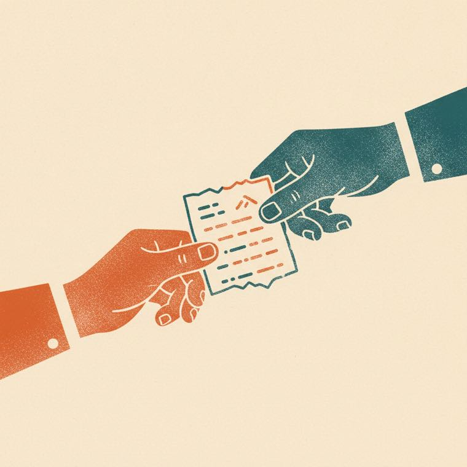

Did the person arrive, and was the building open when they got there?
Nothing else tells you whether making the call first actually helped. Until someone runs that week, this is a guess.
Ask the city to publish a phone number for each station. Their absence is why this detours through 211.
Ask 211 whether it gets the city’s activation notices. We could not confirm that it does.
Claude Code was used throughout: to research the sources, build the handoff card, and design this deck.